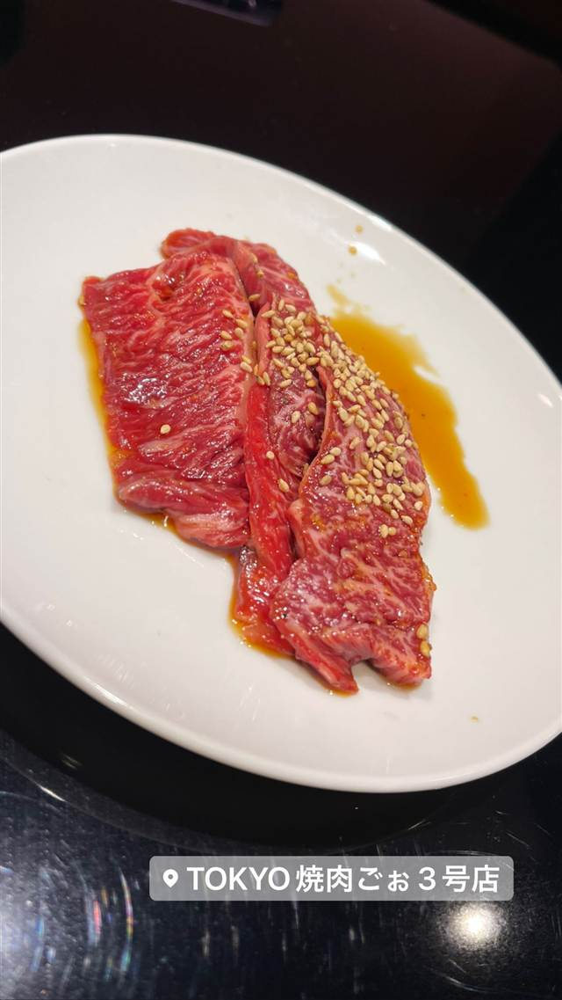
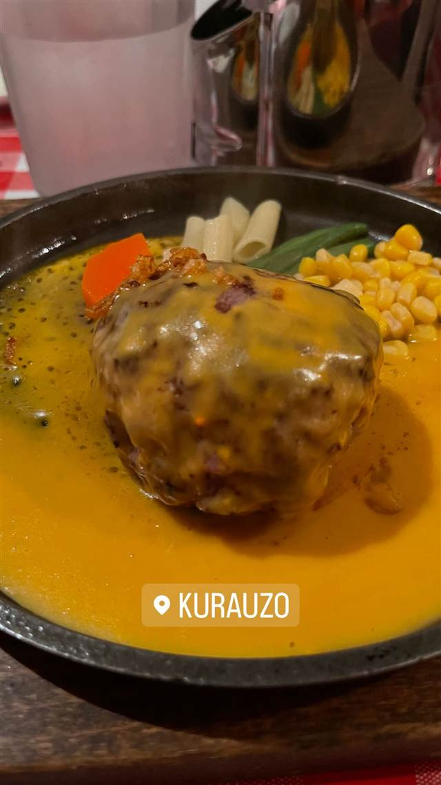

BY TOWN
御徒町4店
-
 ★
つけ麺 御徒町
あいだや
1杯で2種のつけ汁を同時に味わえる小池グループの新業態のつけ麺店
昼 ¥1,000～¥1,999 夜 ¥1,000～¥1,999
★
つけ麺 御徒町
あいだや
1杯で2種のつけ汁を同時に味わえる小池グループの新業態のつけ麺店
昼 ¥1,000～¥1,999 夜 ¥1,000～¥1,999
-
 居酒屋 御徒町
ワインの酒場。ディプント 上野御徒町店
PRONTOと同じ会社が営む、生ハム盛りとワインの店
夜 ¥2,000～¥2,999
居酒屋 御徒町
ワインの酒場。ディプント 上野御徒町店
PRONTOと同じ会社が営む、生ハム盛りとワインの店
夜 ¥2,000～¥2,999
-

焼肉 御徒町 TOKYO焼肉ごぉ 3号店 厚切り肉の食べ放題で味わう名物の提灯ロース 昼 ¥1,000～¥1,999 夜 ¥5,000～¥5,999 -

ハンバーグ 御徒町 ハンバーグ＆ステーキ食堂クラウゾ 本店 国産牛を注文後に粗挽き手ごねする、行列必至のハンバーグ 昼 ～¥999 夜 ¥1,000～¥1,999